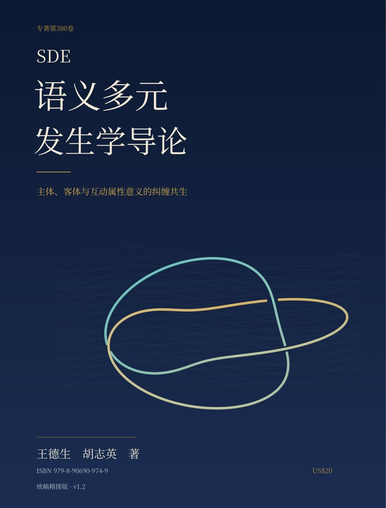

DEMAI MONOGRAPHS · VOL. 380
SDE语义多元
发生学导论
同样的情境中，意义为什么仍然是多元的？
同一次语义发生，何以已有多元？从属性纠缠出发，研究主体、客体与互动三种属性意义的共生，以及诸意义之间的关联、需要、条件与影响。

当前出版范围：导论、第1—25章，以及“当代语义理论对话”专题，共34个文本单元。全书后续第26—41章仍在规划中；本单元完整提供本次已出版内容。
阅读 · 学习包 · 智能体
让理解留下依据，让修订可以回看。
从一个词开始
“甜”不是三个彼此独立的意义相加。
同一次品尝里，食物显出的属性、品尝者的辨别与承受、以及具体的接触过程相互规定。
客体属性意义
什么东西被判为甜？比较、测量和命名所显出的食物属性，在哪些条件下成立？
主体属性意义
谁能辨别、承受、表达这个甜？能力与位置如何在具体品尝中获得规定？
互动属性意义
含、咬、溶解、比较与回应怎样展开？活动方式如何参与这个甜的发生？
模型能够描述“甜”并参与语言交流，这不直接证明它亲自发生了味觉体验。区分语言层的参与与品尝层的发生，是本书检验理论边界的重要案例。
阅读：分布语义与大语言模型 →诸意义之间怎样纠缠？
本书从词内三属性的共同构成，推进到意义之间的互相关联、互相需要、互为条件与互相影响。难与能力、承诺与履行、安全与风险，不因并排写下就构成纠缠；研究需要逐项展示它们怎样参与彼此的规定。
自然科学、社会科学与人文科学由此获得共同研究的入口。客体、互动与主体是可区分的侧重，具体研究中的发生条件仍需一起核对。
本次出版目录
34个文本单元 · 网页原文逐章可读
- 导论 同一句话中的多元意义p. 1
- 第1章 我们所说的“意义多元”，究竟是什么p. 9
- 第2章 词典里的多个意义，是怎样留下来的p. 17
- 第3章 语境解释了什么，又留下了什么p. 26
- 第4章 隐喻、转喻与认知框架：意义扩展的机制p. 33
- 第5章 从语义生成走向语义的存在论p. 41
- 专题导言 把语义发生学放进共同问题p. 51
- 对话一 真值条件与动态语义：判断、接续与构成p. 53
- 对话二 认知与框架语义：入口怎样成为入口p. 59
- 对话三 生成词库与系统多义：同一份报告怎样承载不同规定p. 65
- 对话四 关联理论与词汇语用学：从临时概念到共同判准p. 71
- 对话五 规范推论与参与式意义生成：什么使一句回应算作同意p. 77
- 对话六 分布语义与大语言模型：从甜的表示到甜的发生p. 83
- 专题结语 从理论并列走向可以裁决的构成问题p. 89
- 第6章 属性与承载者如何共同发生p. 94
- 第7章 三属性纠缠的构成关系p. 105
- 第8章 属性发生怎样进入语义发生p. 116
- 第9章 意义多元的存在论内发性p. 128
- 第10章 侧重显露 封装与确定意义p. 138
- 第11章 客体属性意义p. 150
- 第12章 主体属性意义p. 161
- 第13章 互动属性意义p. 171
- 第14章 四组语义共生案例p. 182
- 第15章 普遍命题面临的难题p. 192
- 第16章 从词内纠缠到诸意义共同发生p. 203
- 第17章 意义的互相关联p. 213
- 第18章 意义的互相需要p. 223
- 第19章 意义的互为条件p. 234
- 第20章 意义的互相影响和共同再生p. 245
- 第21章 三方程与意义的相互构成p. 257
- 第22章 六路径与研究进入次序p. 267
- 第23章 三原理与语义改变p. 278
- 第24章 意义三律与语义发生三原理的衔接p. 289
- 第25章 一次完整的语义纠缠研究p. 301
下载与研读
学习包与“义生”是配套研读设计。练习、模型建议和读者记录与著者原文分别标识；学习量规用于自查，尚未作为实证验证量表。